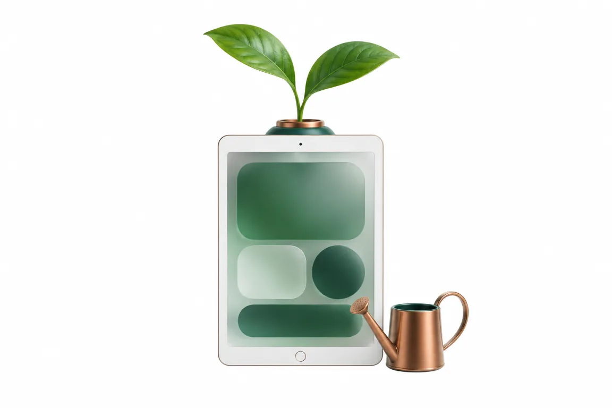
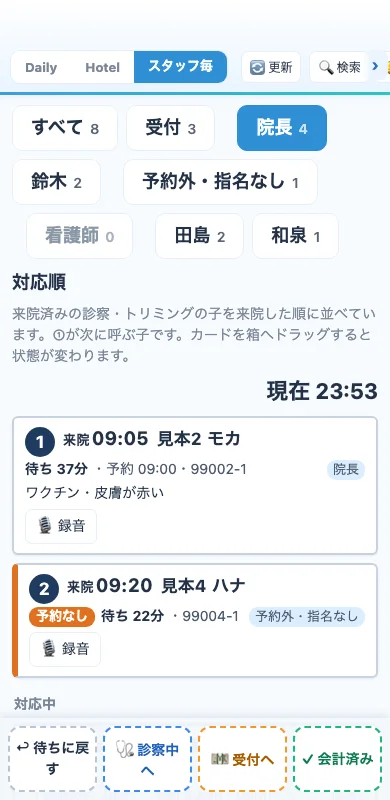
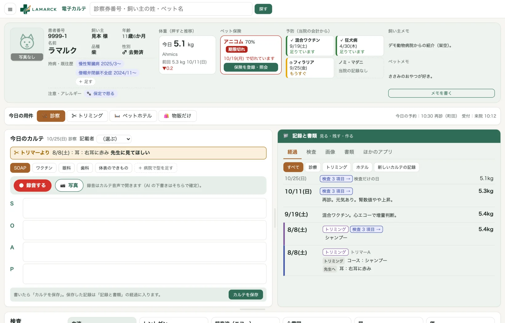
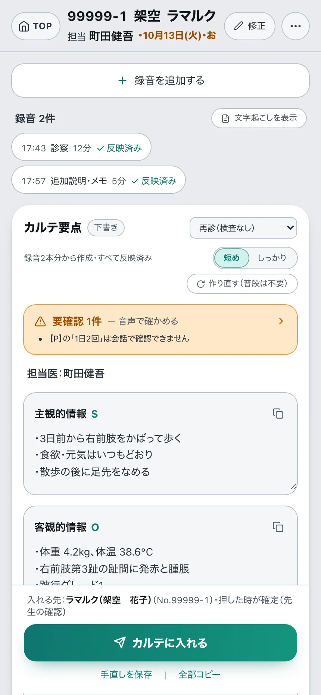
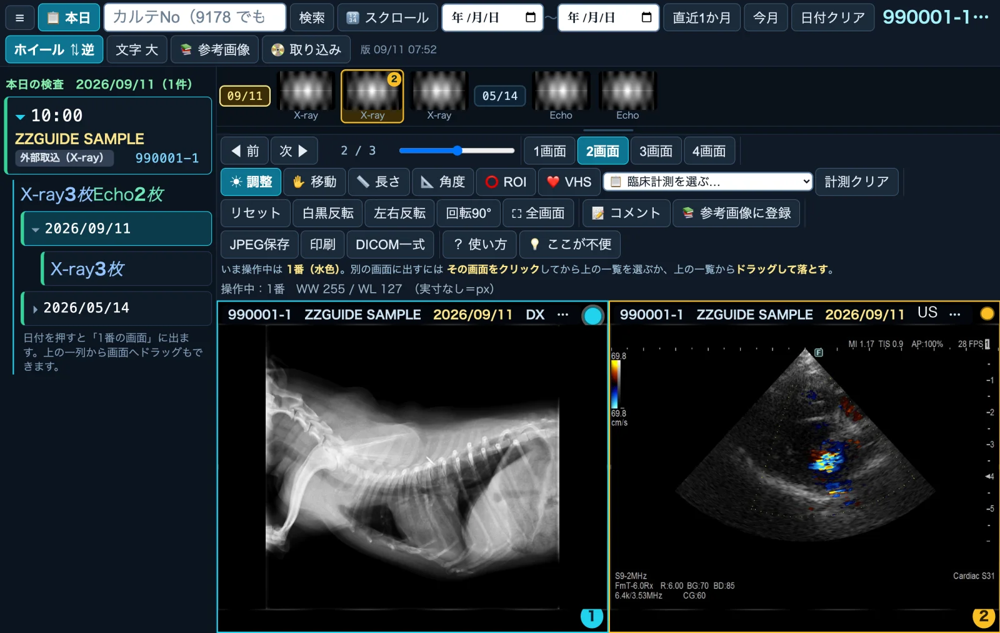
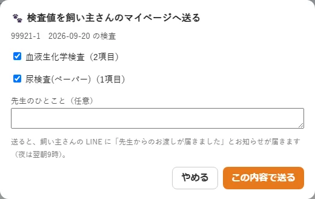
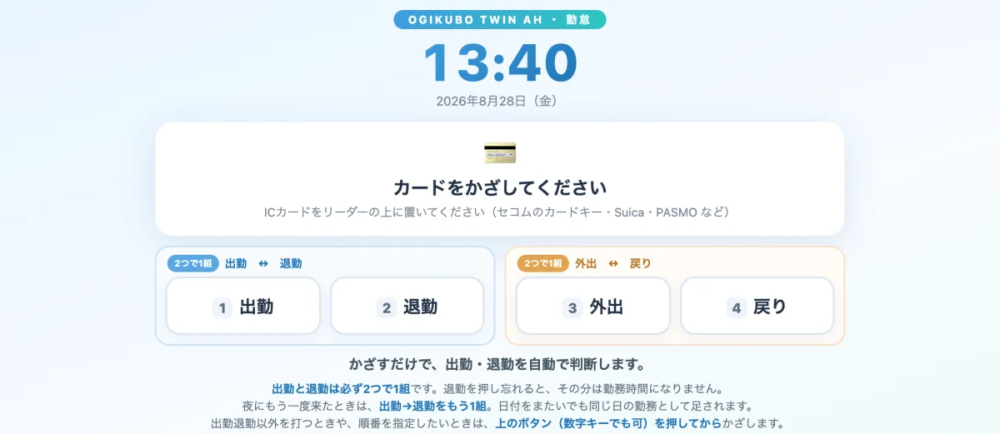
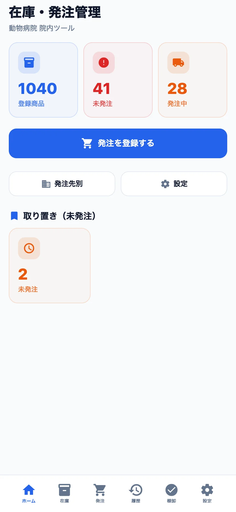

1本につながると、
仕事が連動しはじめる。
別々のシステムを行き来していた情報が、1つの流れになります。予約で入った情報が問診へ、問診がカルテへ、カルテが報告書と会計へ。同じことを何度も打たずに済みます。

実際の画面
タブを押すと切り替わります。画面はすべて見本のデータです。
電話を取らずに、予約が埋まっていく
飼い主さんが LINE から24時間予約。受付のスマホには来院の順番と待ち時間が並び、カードを動かすだけで「診察中」「会計待ち」に進みます。
画面は見本のデータです
1頭のすべてが、1画面に
持病、体重の推移、ペット保険、予防の時期、トリマーからの申し送り。今日のカルテは録音から下書きでき、経過・検査・画像・書類は右側にまとまっています。
見本の患者（ラマルク）
話すだけで、カルテの下書き
診察室で録音を押して話すだけ。AI が主訴・所見・計画に分けて下書きを作り、獣医師が確かめてからカルテに入れます。
見本の患者（ラマルク）
レントゲンとエコーを、2画面で並べて
胸部レントゲンの側面像と心エコーを並べて見比べられます。1頭の画像が日付ごとにまとまり、計測（長さ・角度・VHS）やコメントもその場で。
画像は当院の実際の検査（名前・番号は見本に置き換え）
検査の結果を、そのままマイページへ
カルテの検査値を選んで送るだけで、飼い主さんの LINE に「先生からのお渡しが届きました」とお知らせが届きます。
見本のデータ
カードをかざすだけで、出勤と退勤
打刻は IC カードをかざすだけ。出勤と退勤の記録は、そのままアプリの中で集計されます。

在庫と発注を、スマホで
品目ごとの残数、足りなくなりそうな物、発注の記録をスマホで確かめられます。

1日の流れが、そのままつながる
受付から飼い主さんへのお知らせまで、ラマルクの中で1本の流れになっています。
予約
飼い主さんが LINE から24時間予約。診察・歯科・予防・トリミング・ホテルを、病院の決まりに合わせた形で受け付けます。
問診
来院前に Web 問診へ回答。初診の方の登録もここで済むので、受付で書く紙がありません。
受付
来院を知らせるだけで診察へ。麻酔前の注意事項は、受付の画面にお知らせが出ます。
診察
話すだけで AI がカルテの下書きと要点を作り、獣医師が確認して確定します。
会計
薬の量は体重から計算され、金額も自動で出ます。
お知らせ
健診結果や報告書を、飼い主さんの LINE とマイページへ。会計からそのまま次の予約も取れます。
当院で毎日動いているアプリ
どれも荻窪ツイン動物病院の本番で使っているものです。全部を一度に入れる必要はありません。困っている所から始めて、慣れてから広げます。
予約と受付
- LINE・Web からの予約（キャンセル待ちも自動）
- ホテルの部屋割り
- Web 問診と前日のお知らせ
- 受付のお知らせ（麻酔前の注意）
診療と記録
- 電子カルテ（来院歴・検査の推移・画像を1頭ずつ）
- 音声カルテ
- 入院カルテ（治療シートと投薬）
- 画像ビューア（レントゲン・歯科写真）
- 紹介状を選んで作る
飼い主さんへの報告
- 健康診断の報告書（AI が下書き）
- 歯科の治療報告書
- 結果の LINE 送信とマイページ
- トリミング・ホテルの写真をマイページで
経営と事務
- 勤怠（給与計算は始める時期をご相談）
- 在庫と発注
- 小口現金（領収書を読み取り）
- 経営の数字を見る画面
学びと症例
- 文献ライブラリ（論文の要約を日本語で）
- 症例バンク
院外から
- 携帯でカルテ・予約・入院を確認
- 休みの日も担当の患者さんを見られる
- 報告書を家で仕上げる
使うほど、病院に合っていく
どのアプリにも「ここが不便」のボタンがあります。スタッフが書いた一言が、数日で画面に入ります。
- スタッフが書く
「キャンセル待ちを予約表で一目で見たい」のように、困ったことをその場で書くだけ。
- 直し方の案ができる
AI が、どこをどう変えるかの案を作ります。
- 院長が承認する人が決める
院長先生の承認なしに、本番の画面は変わりません。
- 検査してから反映
検査を通してから、本番の画面に入れます。
- 依頼した人に知らせる
反映したら、書いたスタッフ本人へお知らせが届きます。
- 良い改善は全院へ
ほかの医院でも役立つ改善は、ラマルクの機能として全院に届けます。受け継ぐのは機能で、患者さんの情報ではありません。
まずは資料を、
LINE で受け取ってください。
病院名・院長名・（開業前の方は）開業予定の時期をお送りください。確認のうえ、詳しい資料と画面の動画をお届けします。